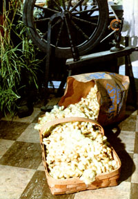

Mary has her work cut out for her here! That bag holds about 10,000 cocoons ... each of which is composed of 600 to 1,000 yards of thread. That's enough (all together) to produce about 5 pounds of raw silk, or about 30 pairs of silk stockings.